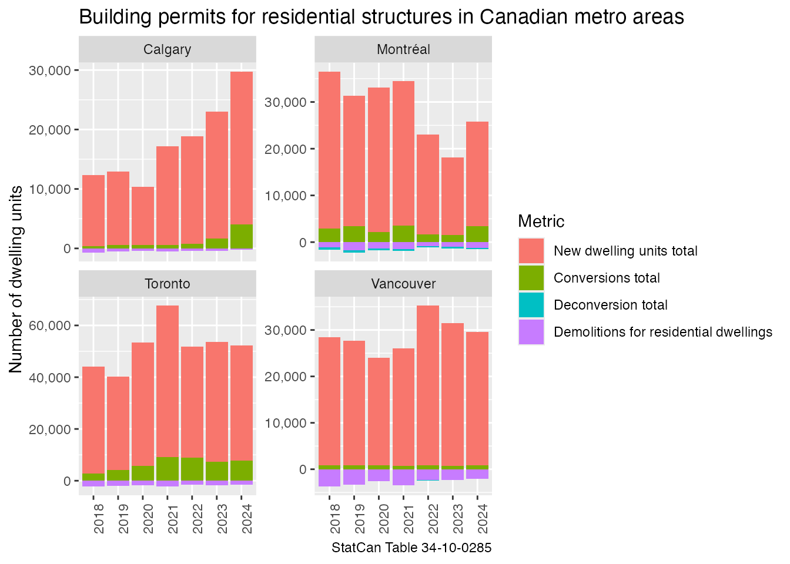

Partial table data download
Source:vignettes/partial_table_data_download.Rmd
partial_table_data_download.RmdSometimes one is only interested in a relatively small subset of a large table, and instead of having to download the entire table, or just a handful of vectors, one might want to access a substantial number of coordinates without having to download the entire table. The package facilitates this by
- allowing to create a template table using just the table metadata that informs on the available combination of dimensions and their coordinates, and
- allowing to access a subset of the table using a filtered version of the template.
We demonstrate this process by taking the large Table 34-10-0285 on building permits.
library(cansim)
library(dplyr)
#>
#> Attaching package: 'dplyr'
#> The following objects are masked from 'package:stats':
#>
#> filter, lag
#> The following objects are masked from 'package:base':
#>
#> intersect, setdiff, setequal, union
library(ggplot2)
bp_template <- get_cansim_table_template("34-10-0285")
head(bp_template)
#> # A tibble: 6 × 7
#> cansimTableNumber COORDINATE Geography `Type of building` `Type of work`
#> <chr> <chr> <chr> <chr> <chr>
#> 1 34-10-0285 1.1.1.1.1 Canada Total residential and n… Types of work…
#> 2 34-10-0285 1.1.1.1.2 Canada Total residential and n… Types of work…
#> 3 34-10-0285 1.1.1.1.3 Canada Total residential and n… Types of work…
#> 4 34-10-0285 1.1.1.1.4 Canada Total residential and n… Types of work…
#> 5 34-10-0285 1.1.1.2.1 Canada Total residential and n… Types of work…
#> 6 34-10-0285 1.1.1.2.2 Canada Total residential and n… Types of work…
#> # ℹ 2 more variables: Variables <chr>, `Seasonal adjustment, value type` <chr>The template gives information on the possible combinations of data (although some combinations might not be available in the table and have no data). We can use this to pinpoint data series we are interested in. For the purpose of this example we want to look at the number of housing units created and lost in the four largest metro areas in Canada.
bp_template_filtered <- bp_template %>%
filter(Geography %in% c("Toronto, Ontario", "Montréal, Quebec", "Vancouver, British Columbia", "Calgary, Alberta"),
`Type of building` %in% c("Total residential","Total demolitions"),
`Type of work` %in% c("Demolitions for residential dwellings","Deconversion total","Conversions total","New dwelling units total"),
Variables %in% c("Number of dwelling-units created", "Number of dwelling-units lost", "Number of dwelling-units demolished"),
`Seasonal adjustment, value type` == "Unadjusted, current"
)
bp_template_filtered
#> # A tibble: 96 × 7
#> cansimTableNumber COORDINATE Geography `Type of building` `Type of work`
#> <chr> <chr> <chr> <chr> <chr>
#> 1 34-10-0285 24.4.3.2.1 Montréal, Qu… Total residential New dwelling …
#> 2 34-10-0285 24.4.3.3.1 Montréal, Qu… Total residential New dwelling …
#> 3 34-10-0285 24.4.3.4.1 Montréal, Qu… Total residential New dwelling …
#> 4 34-10-0285 24.4.16.2.1 Montréal, Qu… Total residential Conversions t…
#> 5 34-10-0285 24.4.16.3.1 Montréal, Qu… Total residential Conversions t…
#> 6 34-10-0285 24.4.16.4.1 Montréal, Qu… Total residential Conversions t…
#> 7 34-10-0285 24.4.20.2.1 Montréal, Qu… Total residential Deconversion …
#> 8 34-10-0285 24.4.20.3.1 Montréal, Qu… Total residential Deconversion …
#> 9 34-10-0285 24.4.20.4.1 Montréal, Qu… Total residential Deconversion …
#> 10 34-10-0285 24.4.24.2.1 Montréal, Qu… Total residential Demolitions f…
#> # ℹ 86 more rows
#> # ℹ 2 more variables: Variables <chr>, `Seasonal adjustment, value type` <chr>This leaves us with 96 coordinates from the table. To get data for
just this subset of the table we feed that into the
get_cansim_data_for_table_coord_periods function. By
default this will get the data for all available times, we could narrow
it down to the latest
periods using the periods argument, but here we want to get
all available data.
bp_data <- get_cansim_data_for_table_coord_periods(bp_template_filtered)
#> Accessing CANSIM NDM coordinates from Statistics Canada
#> Could not access data for 80 coordinates, see attr(<result>, 'failed_coordinates') for details.
#> This occurs when combinations of coordinates aren't available in the data table, values can safely be assumed to be NA.
bp_data
#> # A tibble: 1,568 × 17
#> REF_DATE Date GEO `Type of building` `Type of work` Variables
#> <chr> <date> <fct> <fct> <fct> <fct>
#> 1 2017-01-01 2017-01-01 Montréal, … Total demolitions Demolitions f… Number o…
#> 2 2017-02-01 2017-02-01 Montréal, … Total demolitions Demolitions f… Number o…
#> 3 2017-03-01 2017-03-01 Montréal, … Total demolitions Demolitions f… Number o…
#> 4 2017-04-01 2017-04-01 Montréal, … Total demolitions Demolitions f… Number o…
#> 5 2017-05-01 2017-05-01 Montréal, … Total demolitions Demolitions f… Number o…
#> 6 2017-06-01 2017-06-01 Montréal, … Total demolitions Demolitions f… Number o…
#> 7 2017-07-01 2017-07-01 Montréal, … Total demolitions Demolitions f… Number o…
#> 8 2017-08-01 2017-08-01 Montréal, … Total demolitions Demolitions f… Number o…
#> 9 2017-09-01 2017-09-01 Montréal, … Total demolitions Demolitions f… Number o…
#> 10 2017-10-01 2017-10-01 Montréal, … Total demolitions Demolitions f… Number o…
#> # ℹ 1,558 more rows
#> # ℹ 11 more variables: `Seasonal adjustment, value type` <fct>, VALUE <dbl>,
#> # val_norm <dbl>, SCALAR_ID <int>, VECTOR <chr>, cansimTableNumber <chr>,
#> # COORDINATE <chr>, SYMBOL <int>, releaseTime <chr>, frequencyCode <int>,
#> # DECIMALS <int>We then aggregate it to annual data and plot it by year and area, separating out dwellings newly created, created through conversion, those lost to deconversions and those demolished.
bp_data |>
mutate(Value=case_when( # count demolitions and deconversions as negative
Variables %in% c("Number of dwelling-units demolished","Number of dwelling-units lost") ~ - val_norm,
TRUE ~ val_norm
)) |>
mutate(Name=gsub(", .+","",GEO),
Year=strftime(Date,"%Y")) |>
summarize(Value=sum(Value),n=n(),.by=c(Name,Year,`Type of work`)) |>
filter(n==12,!is.na(Value)) |> # only show years with complete 12 months of data
ggplot(aes(x=Year,y=Value,fill=`Type of work`)) +
geom_bar(stat="identity") +
facet_wrap(~Name,scales="free_y") +
scale_y_continuous(labels=scales::comma) +
theme(axis.text.x = element_text(angle=90, hjust=1)) +
labs(title="Building permits for residential structures in Canadian metro areas",
y="Number of dwelling units",
x=NULL,
fill="Metric",
caption="StatCan Table 34-10-0285") 
Using vectors instead of coordinates
The same can be achieved with downloading data by vectors. For this we need to add the vector information to the table template. Vector information is only available for coordinates, so it also gives an effective way to filter out invalid coordinate combinations from the template. Vector information is not available for census data tables.
bp_template_filtered_vecotrs <- bp_template_filtered |>
add_cansim_vectors_to_template()
bp_data_vector <- bp_template_filtered_vecotrs$VECTOR |>
na.omit() |>
get_cansim_vector()
#> Accessing CANSIM NDM vectors from Statistics CanadaThis gives us the same data as above, with possibly shorter time
series for some coordinates as querying data by vector will not pull
data for times when the specific vector was not available. When accessed
by vector or by coordinate the data will only differ in this limited
way, and the values on the difference will be NA and won’t
affect the results. For completeness we plot the vector data and obtain
an identical graph.
bp_data_vector |>
mutate(Value=case_when( # count demolitions and deconversions as negative
Variables %in% c("Number of dwelling-units demolished","Number of dwelling-units lost") ~ - val_norm,
TRUE ~ val_norm
)) |>
mutate(Name=gsub(", .+","",GEO),
Year=strftime(Date,"%Y")) |>
summarize(Value=sum(Value),n=n(),.by=c(Name,Year,`Type of work`)) |>
filter(n==12,!is.na(Value)) |> # only show years with complete 12 months of data
ggplot(aes(x=Year,y=Value,fill=`Type of work`)) +
geom_bar(stat="identity") +
facet_wrap(~Name,scales="free_y") +
scale_y_continuous(labels=scales::comma) +
theme(axis.text.x = element_text(angle=90, hjust=1)) +
labs(title="Building permits for residential structures in Canadian metro areas",
y="Number of dwelling units",
x=NULL,
fill="Metric",
caption="StatCan Table 34-10-0285") 